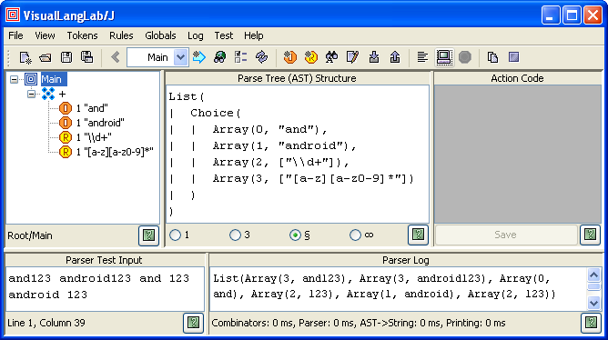
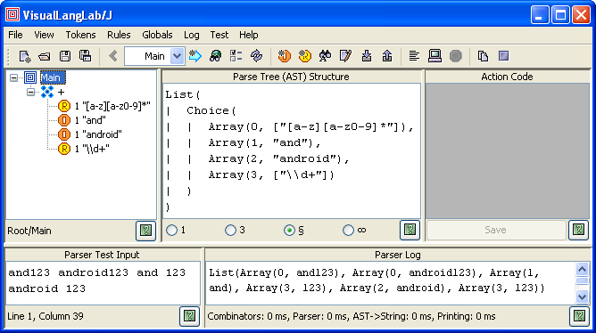

Figure-1. Class diagram relating VisualLangLab with Scala classes
|
For Ver-10.10 or higher only! If you are using an older version, follow this tutorial instead. Beginning Ver-10.01, the title bar of the About VisualLangLab dialog box displays the version number. The latest jar file can be downloaded here: VLL4J.jar. |
Parsers produced by VisualLangLab are based on the parser combinator principle, and the implementation used adapts many design elements of classes in the Scala API's combinator package (with changes needed to suit the Java language and the GUI-IDE environment).
The class diagram in Figure-1 below shows the organization of VisualLangLab's parser combinator classes, and how the GUI uses them. The design of Parsers, Parser, RegexParsers, and PackratParsers is based on corresponding classes in the Scala API (respectively Parsers, Parser, RegexParsers, and PackratParsers).
Figure-1. Class diagram relating VisualLangLab with Scala classes
The class SimpleLexingRegexParsers (lightly shaded in the figure) is however unique to VisualLangLab, and is its built-in lexical analyzer (or just lexer). The built-in lexer improves upon the very simple functionality of RegexParsers' literal() and regex() functions, and provides characteristics similar to those seen in full-fledged lexers.
VisualLangLab's built-in lexer has the following characteristics:
Figure-2 below shows a parser and a test-run illustrating these concepts. The rule-tree shown contains a Choice element that attempts to match its input to one of the following tokens (the quote marks are not part of the token specification):
The Choice element has a multiplicity of "+" (1 or more), and we run the parser (see Validation Is Easy) against the following input: "and123 android123 and 123 android 123" (again, the quote marks are not part of the input). As the parser's output (the text under Parser Log) shows, the words in the input are correctly matched to the expected tokens (the output format is explained in AST Structure).

Figure-2. Built-in lexer characteristics
The corresponding Scala parser created with RegexParsers would behave in a different way. That parser would break up words like "and123" and "android123" into two separate tokens ("and" or "android" respectively followed by "123"). This particular problem can be solved by using a parser based on JavaTokenParsers instead of RegexParsers, but even JavaTokenParsers is not a fully capable generic lexer suitable for all applications.
The built-in lexer's characteristics shown above are independent of the ordering of the tokens within the Choice element as demonstrated in Figure-3 below. The regex token "[a-z][a-z0-9]*" has, in this case, been moved up to become the choice element's first child node.

Figure-3. Ordering of tokens in choice
In this case, a Scala parser created with RegexParsers would interpret the input words "and" and "android" as instances of the regex "[a-z][a-z0-9]*", not as the corresponding literal tokens.
The built-in lexer does not support scoped tokens, and all tokens exist in a single global scope. However most scoping needs can be served by a rudimentary, sledgehammer-strength mechanism: ending a token's name with an underscore (_) places it in its own private scope. When the parser tests for such a token, the lexer does not come into play, so any other token definitions (in the global scope and other private scopes) are not considered. In effect, the lexer falls back to using the literal() and regex() methods of RegexParsers for these tokens.
Tokens in private scopes may use the same pattern specification as any other non-private token. Among other uses, such tokens may be used to allow keywords to be used as identifiers in limited contexts.
The lexer depends on RegexParsers's standard mechanism for handling whitespace. The regular expression passed to it is, however, created from the two separate specifications for whitespace and comments (see Whitespace and Comments).
The focus at this time is on functionality, so the performance of the lexer is not the best possible. Future versions will improve the design and performance of the lexer.
The builtin lexer has no dependencies on any other component of VisualLangLab, and may be used separately if required.